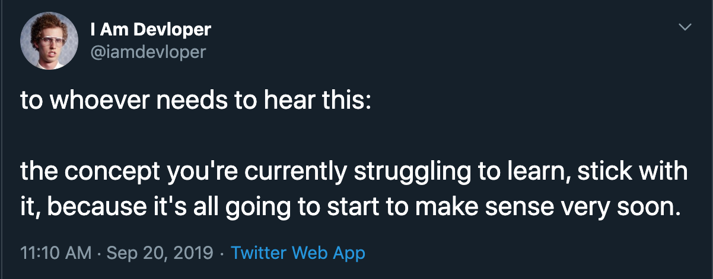

When Did We Become Afraid to Try?
Jennifer Wadella

Jennifer Wadella
@likeOMGitsFEDAY
- Lead Angular Consultant at Bitovi
- Community Organizer
- Fermentista
Experimenting in Life
Kombucha
A fermented tea drink that’s made by adding yeast
+ a culture of bacteria to a mixture of tea, sugar,
& sometimes additional flavorings or fruit juice.
Contains probiotics - good for gut health
Estimated origin around 200BCE
Ingredients
- SCOBY
(symbiotic culture of bacteria & yeast) - water
- tea
- sugar
- flavorings
(fruit, spice, herbs, flowers)
<- SCOBY pellicle
process
1. Brew tea
2. Add sugar
3.Add cooled sweet tea to SCOBY
4. Let the SCOBY do it's magic
5. Bottle & add flavor
6. Strain & Rebottle
| fermentation vessel | £24.00 |
| 3x grolsch bottles | £11.95 |
| tea | £2.00 |
| sugar | £1.30 |
| fruit | £1.75 |
| total cost | £41 |
|---|
My first brew


"Why are people
so afraid
to try things?"
Scientific Method
- Ask a question
- Do background research
- Create a hypothesis
- Test hypothesis with experiment
- Analyze data
- Communicate results
Variable considerations
- Controlled variables
- Independent variables
- Dependent variables
Noma Restaurant & Experimentation Kitchen
So What?
Fear of Trying Keeps People
out of the tech industry
and halts innovation
How do we keep Fear
From Taking Over
Andy Li
Ask why you are afraid.
Ground yourself.
What is the problem?
What is the worst case scenario?
Do a Cost-Benefit Analysis
psssst. code is cheap
UNLESS YOU'RE USING AWS.
THIS IS NOT A PLACE TO "TRY"
Get Over Your Fear of Starting
Remember Newton's First Law
Every object in a state of uniform motion will remain in that state of motion unless an external force acts on it.
twinsfischCode is Malleable
Understand
society
has set us up to
fear failure
Intelligence == fixed
"Overall, parents who see failure as debilitating focus on their children’s performance and ability rather than on their children’s learning, and their children, in turn, tend to believe that intelligence is fixed rather than malleable."
Parents’ Views of Failure Predict Children’s
Fixed and Growth Intelligence Mind-Sets
Adopt a growth mindset
Don't get caught up in comparison culture.
Caroline HernandezInnovation comes from
trying something new
Embrace failure as
part of the process
“The most damaging phrase in the language is 'We've always done it this way'.” - Grace Hopper
Go try something new.
Questions?

Slides available at: tehfedaykin.github.io/WhenDidWeBecomeAfraidToTry